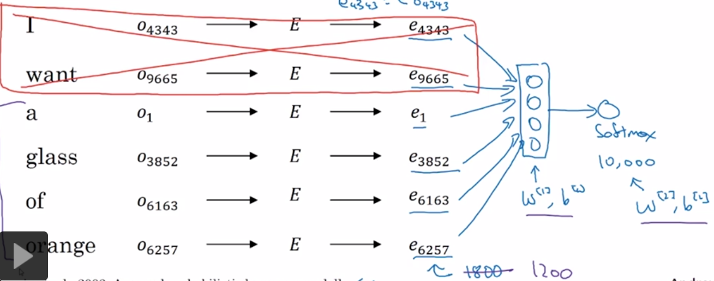
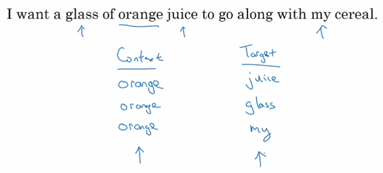

man -> woman， king -> ?
1. 向量相减
找到一个w使式子成立：
公式中的sim代表相似度计算公式，有“余弦相似度”和“平方相似度”。余弦相似度更常用。
- 余弦相似度：
公式中的计算u、v夹角的余弦值，因此称为余弦相似度。
- 平方相似度：
2. 使用NLP语言模型
- 提取target的前K个单词。
- one shot向量经过embedding matrix得到embedding向量
- embedding向量通过RNN神经网络进行训练
- softmax作为NN的输出Unit，来计算w是每个单词的概率。

3. Skip-Gram Model
基于NLP语言模型的改进。
在NLP语言模型中，使用target的前K个单词作为context.
如果目标不是生成语言模型，而是用于训练类比推理，可以使用其它类型的context.
3.1. Word2Vec
通过抽取上下文context和目标target词配对，来构造监督学习问题。
定义：
One-hot Vector: Oc
Embedding Matrix: E
Embedding Vector: Ec
有：
Ec = E * Oc
Word2Vec与NLP语言模型主要区别在于选取context和target的方式不同。
Word2Vec选择target前后的k范围内的词作为context，与target构造一对。

Word2Vec与NLP语言模型使用的网络结构类似
由softmax生成的概率模型为：
公式中是与输出t有关的参数。
定义损失函数为：
问题1： 公式p(t|c)的分母计算非常慢
解决方法：分组的softmax
问题2：怎么采样生成context？
- 均匀随机采样：the, of, a等词频繁出现和更新，orange, apple, durian较少出现和更新
- 启发算法：用于平衡常见词和不常见词
3.2. 负采样 negative sample
解决Word2Vec中p(t|c)计算太慢的问题。
- 生成一对正样本（同Word2Vec），定义其label为1
- 生成k对负样本，负样本的target同正样本，context为字典中的随机词。定义这k个负样本的label为0。
- 用正/负样本(c, t)对及其对应的label训练模型（监督学习）
优化点：
相当于把大小为1000个类别的多分类问题转换成1000个二分类问题。
但并不是每次都把1000个二分类问题都算了，而是只更新k+1个二分类的结果。
问题1：如何决定k？
一般取[5, 20]，数据集大则k小，数据集小则k大。
问题2：如果选择负样本的context?
- 根据词出现的频率进行采样：the, of, and...问题
- 均匀随机抽取：样本没有代表性
- 启发算法
公式中代表词频。
3.3. GloVe 词向量
GloVe = Global Vector = 词向量
特点：简便
- 定义：
为target i出现在context c中的次数
context为tagert前后k范围内的词，因此 - 优化
公式中为权重，用于平衡常见词与不常见词。
4. 词嵌入除偏 Debiasing
用于消除种族歧视、性别歧视等。
例如：
Man:Woman -> King:Queen
Man：程序员 -> Woman：家庭主妇
- 识别bias的方向，以及中轴
- 中和步 neutralization step
有明确的性别分别的词，例如：boy, girl, he, she
没有性别区分的词，例如doctor, nurse, programmer, homemaker
将第二类词中和，即消除它们到中轴的距离。
- 平衡步 equalize
目标：使第一类词对到中轴的距离相等
问题：怎样判断一个词是第一类词还是第二类词？
答：训练一个NN来判断。